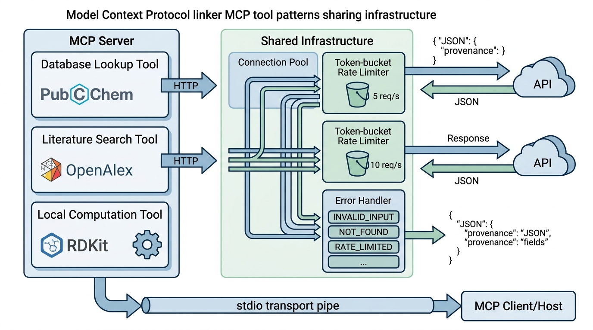

Prerequisites
Section 12.1 established the mental model of MCP:
hosts, clients, servers, transports, and the three primitives (tools, resources,
prompts). This section turns that architecture into working code. You should have the
MCP Python SDK installed (pip install mcp) along with
pubchempy, httpx, and rdkit. Familiarity with
Python's async/await syntax is essential. Throughout this section, SMILES refers to the Simplified Molecular-Input Line-Entry System, a standard notation for describing molecular structures as text strings.
A scientific MCP server is only as useful as the tools it exposes. This section builds three tools that represent the most common patterns in scientific computing: database lookup (querying PubChem for molecular data), literature search (querying OpenAlex for scholarly works), and local computation (calculating molecular descriptors with RDKit). Each pattern introduces different challenges: rate limiting for external APIs, pagination for large result sets, and input validation for domain-specific formats like SMILES notation. By implementing all three, you will have a toolkit of patterns that transfers to any scientific domain. Figure 12.2 illustrates how these three tool patterns connect through the MCP server to the agent and its upstream data sources.
1. Tool Design Principles
What happens when an agent sends a malformed SMILES string to PubChem, parses the HTML error page as valid JSON, and confidently reports fictional molecular properties to the researcher who asked for help? Four design principles prevent that scenario, and they apply regardless of whether you are wrapping a chemistry database, a genomics API, or a telescope control system.
Principle 1: Narrow scope, rich description. Each tool should do one thing
well. A tool called search_compounds should search for compounds, not also
compute properties, visualize structures, and predict toxicity. Narrow scope helps the
LLM select the right tool. Descriptions, by contrast, should be generous: include input
formats, example values, error conditions, and output structure. The LLM is the sole
reader of these descriptions.
Principle 2: Validate early, fail clearly. Every input should be validated before any external API call is made. If a SMILES string is syntactically invalid, report that immediately rather than sending it to PubChem and parsing a cryptic HTTP 400 response. Error messages should be actionable: "Invalid SMILES: unmatched parenthesis at position 7" is useful; "Bad request" is not.
Principle 3: Return structured data. Tools should return JSON strings that the LLM can parse, not free-text descriptions. Include units, identifiers, and provenance information. When the agent chains multiple tools (search a compound, then compute its properties, then find related literature), each step must derive its input from the previous step's output. Structured data makes this chaining reliable. This principle connects to the knowledge representation ideas from Chapter 3: the tool's output is a knowledge artifact that must be machine-readable.
Principle 4: Respect rate limits. Scientific APIs are shared resources. PubChem allows roughly 5 requests per second; OpenAlex allows around 10 (check each API's current documentation, as these limits change). (A database of 116 million compounds, accessible through a pipe no wider than five queries per second: without client-side throttling, a single eager agent can lock itself out in under a second.) A well-behaved MCP server enforces these limits internally rather than relying on the host or the agent to throttle. Rate limiting also protects your server from an overeager agent that decides to enumerate every compound in a database.
How the Rate Limiter Works
A rate limiter controls how many requests your code sends to an external service within a given time window. It prevents your application from being blocked or banned for excessive usage. Scientific APIs like PubChem serve millions of researchers worldwide. Exceeding their posted limits triggers HTTP 429 errors that stall your entire agent pipeline, and repeated violations can lead to IP bans. The token-bucket algorithm maintains a counter of available "tokens" that refills at a steady rate (e.g., 5 per second). Each request consumes one token; if none are available, the caller sleeps until one regenerates. Use a rate limiter whenever your MCP server wraps an external API. For purely local computation tools (like the RDKit descriptor calculator below), you control the resource entirely, so no rate limiting is needed.
A human researcher using PubChem can glance at a results page, notice that the top hit is wrong, refine the query, and scan the corrected results in seconds. An LLM agent cannot do this. Every ambiguity in a tool's output becomes a potential reasoning error. This is why structured returns matter more for MCP tools than for human-facing APIs: the agent's "glance" is parsing JSON, and its "refinement" costs another full LLM inference. Designing tools for machine consumption is a skill distinct from designing APIs for human consumption, and mastering it is essential for the AI scientist systems we build in Part VII.
These principles become concrete when applied to real scientific APIs, so let us start with the most common pattern: querying a public database for molecular data.
2. Pattern 1: Database Lookup (PubChem)
When a research team's automated screening pipeline queries the wrong compound or silently drops results because of a malformed API call, weeks of downstream wet-lab work can be wasted chasing false leads. Getting the implementation right at the tool boundary is what separates an agent that accelerates discovery from one that poisons it.
PubChem is widely regarded as the largest open chemistry database, containing over 116 million compounds (circa 2024) with associated bioactivity data. Its Power User Gateway (PUG) REST API provides programmatic access to compound searches, property lookups, and similarity queries. Three endpoints become MCP tools here: compound search by name, property retrieval by CID (compound identifier), and similarity search by structure. In short: a scientific tool is a contract between the agent and reality; validate the input, structure the output, and the agent becomes a reliable lab partner.
"""PubChem MCP tools with rate limiting and structured output."""
import asyncio
import json
import time
from typing import Literal
import httpx
from mcp.server import Server
from pydantic import BaseModel, Field
PUBCHEM_BASE = "https://pubchem.ncbi.nlm.nih.gov/rest/pug"
# Rate limiter: PubChem allows 5 requests/second
class RateLimiter:
"""Token-bucket rate limiter for API calls."""
def __init__(self, rate: float, burst: int = 1):
self.rate = rate # tokens per second
self.burst = burst # max tokens
self.tokens = float(burst)
self.last_refill = time.monotonic()
self._lock = asyncio.Lock()
async def acquire(self):
async with self._lock:
now = time.monotonic()
elapsed = now - self.last_refill
self.tokens = min(self.burst, self.tokens + elapsed * self.rate)
self.last_refill = now
if self.tokens < 1.0:
wait = (1.0 - self.tokens) / self.rate
await asyncio.sleep(wait)
self.tokens = 0.0
else:
self.tokens -= 1.0
pubchem_limiter = RateLimiter(rate=5.0, burst=5)
server = Server("pubchem-tools")
@server.tool()
async def search_pubchem(
query: str,
search_type: Literal["name", "formula", "smiles"] = "name",
max_results: int = Field(default=5, ge=1, le=25),
) -> str:
"""Search PubChem for chemical compounds.
Finds compounds matching a name, molecular formula, or SMILES string
and returns their identifiers and basic properties.
Args:
query: The search term. Examples by search_type:
- name: 'aspirin', 'caffeine', 'glucose'
- formula: 'C9H8O4', 'C8H10N4O2'
- smiles: 'CC(=O)OC1=CC=CC=C1C(=O)O'
search_type: How to interpret the query string.
max_results: Number of results to return (1-25).
Returns:
JSON object with 'compounds' array and 'total_count' field.
Each compound has: cid, name, formula, weight, smiles.
"""
await pubchem_limiter.acquire()
namespace_map = {"name": "name", "formula": "fastformula", "smiles": "smiles"}
namespace = namespace_map[search_type]
async with httpx.AsyncClient(timeout=30.0) as client:
# Step 1: Search for CIDs
search_url = f"{PUBCHEM_BASE}/compound/{namespace}/{query}/cids/JSON"
resp = await client.get(search_url)
if resp.status_code == 404:
return json.dumps({"compounds": [], "total_count": 0,
"message": f"No compounds found for '{query}'"})
resp.raise_for_status()
cids = resp.json()["IdentifierList"]["CID"][:max_results]
# Step 2: Fetch properties for matched CIDs
await pubchem_limiter.acquire()
cid_str = ",".join(str(c) for c in cids)
props_url = (
f"{PUBCHEM_BASE}/compound/cid/{cid_str}/property/"
"IUPACName,MolecularFormula,MolecularWeight,CanonicalSMILES/JSON"
)
props_resp = await client.get(props_url)
props_resp.raise_for_status()
properties = props_resp.json()["PropertyTable"]["Properties"]
compounds = [
{
"cid": p["CID"],
"name": p.get("IUPACName", "unknown"),
"formula": p.get("MolecularFormula", ""),
"weight": p.get("MolecularWeight", 0.0),
"smiles": p.get("CanonicalSMILES", ""),
}
for p in properties
]
return json.dumps({
"compounds": compounds,
"total_count": len(cids),
"source": "PubChem",
"query": query,
"search_type": search_type,
}, indent=2)
The code above reflects several deliberate design choices. First, the rate limiter is shared
across all tool calls in the server process, not per-tool. If the server exposes
three PubChem tools, they all draw from the same 5-requests-per-second budget.
Second, the tool makes two sequential API calls (search, then property fetch), each
rate-limited independently. Third, the output includes provenance fields
(source, query, search_type) that help the agent
(and the human reviewing the agent's work) trace where the data came from. Provenance
tracking becomes critical in
Chapter 47: Experiment Registries.
3. Pattern 2: Literature Search (OpenAlex)
OpenAlex is an open catalog of scholarly works, authors, institutions, and concepts covering over 250 million publications (circa 2024). Its REST API supports full-text search, filtering by date, author, journal, and concept, and returns structured metadata including abstracts, citation counts, and open-access URLs.
"""OpenAlex MCP tools for literature search."""
import json
from typing import Literal
import httpx
from mcp.server import Server
from pydantic import Field
server = Server("literature-tools")
OPENALEX_BASE = "https://api.openalex.org"
# OpenAlex polite pool: include your email for higher rate limits
OPENALEX_EMAIL = "your-email@institution.edu"
@server.tool()
async def search_literature(
query: str,
max_results: int = 10,
sort_by: Literal["relevance", "cited_by_count", "publication_date"] = "relevance",
year_from: int | None = None,
year_to: int | None = None,
open_access_only: bool = False,
) -> str:
"""Search scholarly literature using OpenAlex.
Finds academic papers matching a text query, with optional filters
for date range, citation count, and open access availability.
Args:
query: Search terms (e.g., 'CRISPR gene editing efficiency').
Supports boolean operators: 'machine learning AND drug discovery'.
max_results: Number of papers to return (1-50, default 10).
sort_by: Sort order for results.
year_from: Filter to papers published on or after this year (e.g., 2020).
year_to: Filter to papers published on or before this year (e.g., 2026).
open_access_only: If true, return only open-access papers.
Returns:
JSON with 'papers' array (title, authors, year, doi, abstract, citations,
open_access_url) and 'total_count' of matching works.
"""
params = {
"search": query,
"per_page": min(max_results, 50),
"mailto": OPENALEX_EMAIL,
}
# Build sort parameter
sort_map = {
"relevance": "relevance_score:desc",
"cited_by_count": "cited_by_count:desc",
"publication_date": "publication_date:desc",
}
params["sort"] = sort_map[sort_by]
# Build filter string
filters = []
if year_from:
filters.append(f"from_publication_date:{year_from}-01-01")
if year_to:
filters.append(f"to_publication_date:{year_to}-12-31")
if open_access_only:
filters.append("is_oa:true")
if filters:
params["filter"] = ",".join(filters)
async with httpx.AsyncClient(timeout=30.0) as client:
resp = await client.get(f"{OPENALEX_BASE}/works", params=params)
resp.raise_for_status()
data = resp.json()
papers = []
for work in data.get("results", []):
# Extract first 3 author names
authors = [
a.get("author", {}).get("display_name", "Unknown")
for a in work.get("authorships", [])[:3]
]
if len(work.get("authorships", [])) > 3:
authors.append("et al.")
# Extract abstract from inverted index
abstract = _reconstruct_abstract(work.get("abstract_inverted_index"))
papers.append({
"title": work.get("title", "Untitled"),
"authors": authors,
"year": work.get("publication_year"),
"doi": work.get("doi"),
"abstract": abstract[:500] if abstract else None,
"cited_by_count": work.get("cited_by_count", 0),
"open_access_url": work.get("open_access", {}).get("oa_url"),
"openalex_id": work.get("id"),
})
return json.dumps({
"papers": papers,
"total_count": data.get("meta", {}).get("count", 0),
"source": "OpenAlex",
"query": query,
}, indent=2)
def _reconstruct_abstract(inverted_index: dict | None) -> str | None:
"""Reconstruct abstract text from OpenAlex inverted index format.
An inverted index maps each word to a list of positions where it appears,
so {"the": [0, 5], "cell": [1]} means "the" is at positions 0 and 5 and
"cell" is at position 1. Reversing this mapping recovers the original text.
"""
if not inverted_index:
return None
# OpenAlex stores abstracts as {word: [positions]}
word_positions = []
for word, positions in inverted_index.items():
for pos in positions:
word_positions.append((pos, word))
word_positions.sort()
return " ".join(word for _, word in word_positions)
mailto parameter enrolls the client in OpenAlex's polite API pool, which provides higher rate limits than anonymous access.
An agent conducting a literature review might chain three tools in sequence. First,
search_literature("CRISPR base editing efficiency", sort_by="cited_by_count")
to find the most influential papers. Second,
search_pubchem("adenine", search_type="name") to get the molecular
structure of the base being edited. Third, a vector database search (Section 12.4)
to find related papers in the lab's private corpus. Each tool returns structured
JSON, and the agent extracts the fields it needs for the next call. This tool-chaining
pattern is the foundation of the
research agents
we build in Chapter 40.
4. Pattern 3: Local Computation (RDKit)
Not every tool calls an external API. Many scientific workflows require local computation: calculating molecular descriptors, parsing protein sequences, running statistical tests, or transforming coordinate systems. These tools are faster (no network latency), more reliable (no API downtime), and can process sensitive data that should not leave the local machine.
"""Local chemistry computation tools using RDKit."""
import json
from mcp.server import Server
server = Server("chemistry-compute")
@server.tool()
async def compute_descriptors(smiles: str) -> str:
"""Compute physicochemical descriptors for a molecule.
Calculates drug-likeness properties commonly used in medicinal chemistry:
molecular weight, LogP (lipophilicity), number of hydrogen bond donors
and acceptors, topological polar surface area (TPSA), and number of
rotatable bonds.
Args:
smiles: Molecule in SMILES notation.
Examples: 'CCO' (ethanol), 'CC(=O)OC1=CC=CC=C1C(=O)O' (aspirin).
Returns:
JSON with molecular descriptors and Lipinski Rule of Five assessment.
Lipinski violations > 1 suggest poor oral bioavailability.
"""
from rdkit import Chem
from rdkit.Chem import Descriptors, Crippen, Lipinski, rdMolDescriptors
mol = Chem.MolFromSmiles(smiles)
if mol is None:
return json.dumps({
"error": f"Invalid SMILES: '{smiles}'. Could not parse molecule.",
"suggestion": "Check for unmatched parentheses, invalid atom symbols, "
"or incorrect bond notation.",
})
# Compute descriptors
mw = Descriptors.MolWt(mol)
logp = Crippen.MolLogP(mol)
hbd = Lipinski.NumHDonors(mol)
hba = Lipinski.NumHAcceptors(mol)
tpsa = rdMolDescriptors.CalcTPSA(mol)
rotatable = Lipinski.NumRotatableBonds(mol)
rings = Lipinski.RingCount(mol)
heavy_atoms = mol.GetNumHeavyAtoms()
# Lipinski Rule of Five assessment
violations = sum([
mw > 500,
logp > 5,
hbd > 5,
hba > 10,
])
return json.dumps({
"smiles": smiles,
"canonical_smiles": Chem.MolToSmiles(mol),
"descriptors": {
"molecular_weight": round(mw, 2),
"logP": round(logp, 2),
"hydrogen_bond_donors": hbd,
"hydrogen_bond_acceptors": hba,
"topological_polar_surface_area": round(tpsa, 2),
"rotatable_bonds": rotatable,
"ring_count": rings,
"heavy_atom_count": heavy_atoms,
},
"lipinski_rule_of_five": {
"violations": violations,
"drug_like": violations <= 1,
"details": {
"MW_le_500": mw <= 500,
"LogP_le_5": logp <= 5,
"HBD_le_5": hbd <= 5,
"HBA_le_10": hba <= 10,
},
},
}, indent=2)
@server.tool()
async def find_similar_compounds(
smiles: str,
threshold: float = 0.7,
fingerprint: str = "morgan",
) -> str:
"""Find structurally similar compounds using molecular fingerprints.
Computes a molecular fingerprint for the query and searches a local
compound database for molecules with Tanimoto similarity above the
threshold.
Args:
smiles: Query molecule in SMILES notation.
threshold: Minimum Tanimoto similarity (0.0 to 1.0, default 0.7).
Values above 0.85 typically indicate the same scaffold.
fingerprint: Fingerprint algorithm. 'morgan' (default, recommended
for activity similarity) or 'rdkit' (for substructure).
Returns:
JSON with similar compounds sorted by decreasing similarity.
"""
from rdkit import Chem, DataStructs
from rdkit.Chem import AllChem, RDKFingerprint
mol = Chem.MolFromSmiles(smiles)
if mol is None:
return json.dumps({"error": f"Invalid SMILES: '{smiles}'"})
# Generate fingerprint for query
if fingerprint == "morgan":
query_fp = AllChem.GetMorganFingerprintAsBitVect(mol, radius=2, nBits=2048)
else:
query_fp = RDKFingerprint(mol)
# In production, search against a real database
# Here we demonstrate the pattern with a small reference set
reference_smiles = [
("aspirin", "CC(=O)OC1=CC=CC=C1C(=O)O"),
("ibuprofen", "CC(C)CC1=CC=C(C=C1)C(C)C(=O)O"),
("acetaminophen", "CC(=O)NC1=CC=C(O)C=C1"),
("naproxen", "COC1=CC2=CC(=CC2=CC1)C(C)C(=O)O"),
("caffeine", "CN1C=NC2=C1C(=O)N(C(=O)N2C)C"),
]
results = []
for name, ref_smi in reference_smiles:
ref_mol = Chem.MolFromSmiles(ref_smi)
if ref_mol is None:
continue
if fingerprint == "morgan":
ref_fp = AllChem.GetMorganFingerprintAsBitVect(ref_mol, radius=2, nBits=2048)
else:
ref_fp = RDKFingerprint(ref_mol)
similarity = DataStructs.TanimotoSimilarity(query_fp, ref_fp)
if similarity >= threshold:
results.append({
"name": name,
"smiles": ref_smi,
"tanimoto_similarity": round(similarity, 4),
})
results.sort(key=lambda x: x["tanimoto_similarity"], reverse=True)
return json.dumps({
"query_smiles": smiles,
"threshold": threshold,
"fingerprint_type": fingerprint,
"similar_compounds": results,
"count": len(results),
}, indent=2)
compute_descriptors calculates physicochemical properties and applies the Lipinski Rule of Five (where a drug candidate is considered orally bioavailable if it violates at most one of four property thresholds). find_similar_compounds performs Morgan fingerprint similarity search against a reference set using the Tanimoto coefficient.
The code above uses two concepts that deserve formal definitions before we move on: molecular fingerprints and the Tanimoto similarity coefficient. The Tanimoto similarity coefficient used in find_similar_compounds measures
the overlap between two molecular fingerprints, where a molecular fingerprint is a fixed-length bit vector in which each bit indicates the presence or absence of a particular molecular substructure. For two binary fingerprints \(A\) and \(B\),
the Tanimoto coefficient is:
where \(a = |A|\), \(b = |B|\), and \(c = |A \cap B|\) are the bit counts. A value of 1.0 means identical fingerprints; values above 0.85 typically indicate compounds sharing the same chemical scaffold. This metric appears again in Chapter 49 when we build chemistry-specific discovery systems.
Mental Model
Think of a molecular fingerprint as a grocery receipt, and Tanimoto similarity as comparing two receipts item by item. Each possible "item" is a specific molecular substructure (a benzene ring, a hydroxyl group, a particular three-atom chain), and the fingerprint marks which items are "purchased" (present in the molecule). Comparing two molecules is like laying two receipts side by side and counting how many items appear on both versus how many appear on either: if two shoppers bought 8 of the same items out of 10 total distinct items across both receipts, their Tanimoto score is 8/10 = 0.8. Just as two shoppers with nearly identical receipts probably cook similar meals, two molecules with high Tanimoto similarity tend to have similar biological activity.
The code above uses the MCP Python SDK's @server.tool() decorator, which
handles schema generation, input deserialization, and error wrapping in about 3 lines
of boilerplate per tool. Without the SDK, you would need to manually construct the
JSON-RPC handler, where JSON-RPC is the remote procedure call protocol (built on JSON) that MCP uses for all communication between client and server, parse the params object, validate against the JSON Schema,
serialize the response, and handle errors. That adds on the order of 40 lines of protocol
plumbing per tool. For a server with 10 tools, the SDK can save several hundred lines
of repetitive code. The SDK also provides @server.resource() and
@server.prompt() decorators with the same savings.
The SDK handles protocol boilerplate, but it cannot handle the failures inherent to external API calls and domain-specific inputs; that responsibility falls on the tool author.
Checkpoint
So far: you have seen three tool patterns (database lookup via PubChem, literature search via OpenAlex, and local computation via RDKit), each demonstrating a different combination of rate limiting, input validation, and structured output. The next section addresses what happens when these tools fail.
5. Error Handling Patterns
Scientific tools fail in predictable ways. External APIs return 429 (rate limited), 404 (compound not found), or 500 (server error). Local computation fails on invalid input (bad SMILES), missing dependencies (RDKit not installed), or resource exhaustion (out of memory on large molecules). A well-designed MCP server handles all of these gracefully.
Common Misconception
A frequent mistake is to raise Python exceptions (or let httpx raise
HTTPStatusError) and rely on the MCP framework to propagate them to the
agent. This does not work well: the agent receives a generic "internal error" message
with no actionable detail, no error code to branch on, and no recovery suggestion.
MCP tools should catch all expected failures and return structured JSON error objects
(with a code, message, and details) as normal return values, reserving uncaught
exceptions only for truly unexpected crashes.
"""Structured error handling for MCP tools."""
import json
from enum import Enum
class ErrorCode(str, Enum):
INVALID_INPUT = "INVALID_INPUT"
NOT_FOUND = "NOT_FOUND"
RATE_LIMITED = "RATE_LIMITED"
UPSTREAM_ERROR = "UPSTREAM_ERROR"
COMPUTATION_ERROR = "COMPUTATION_ERROR"
def tool_error(code: ErrorCode, message: str, details: dict | None = None) -> str:
"""Create a structured error response for MCP tools.
Returns JSON that the agent can parse and act on, rather than
raising an exception that produces an opaque error message.
"""
error = {
"error": True,
"code": code.value,
"message": message,
}
if details:
error["details"] = details
return json.dumps(error, indent=2)
# Usage in a tool:
@server.tool()
async def get_compound_by_cid(cid: int) -> str:
"""Look up a PubChem compound by its CID (compound identifier).
Args:
cid: PubChem Compound ID (positive integer, e.g., 2244 for aspirin).
"""
if cid <= 0:
return tool_error(
ErrorCode.INVALID_INPUT,
f"CID must be a positive integer, got {cid}.",
{"parameter": "cid", "value": cid},
)
await pubchem_limiter.acquire()
async with httpx.AsyncClient(timeout=30.0) as client:
try:
url = f"{PUBCHEM_BASE}/compound/cid/{cid}/property/"
url += "IUPACName,MolecularFormula,MolecularWeight,CanonicalSMILES/JSON"
resp = await client.get(url)
if resp.status_code == 404:
return tool_error(
ErrorCode.NOT_FOUND,
f"No compound found with CID {cid}.",
{"cid": cid, "suggestion": "Verify the CID or use search_pubchem to find it."},
)
if resp.status_code == 429:
return tool_error(
ErrorCode.RATE_LIMITED,
"PubChem rate limit exceeded. Please wait before retrying.",
{"retry_after_seconds": 5},
)
resp.raise_for_status()
except httpx.TimeoutException:
return tool_error(
ErrorCode.UPSTREAM_ERROR,
"PubChem API request timed out after 30 seconds.",
{"suggestion": "Try again or use a more specific query."},
)
except httpx.HTTPStatusError as e:
return tool_error(
ErrorCode.UPSTREAM_ERROR,
f"PubChem API returned HTTP {e.response.status_code}.",
{"status_code": e.response.status_code},
)
props = resp.json()["PropertyTable"]["Properties"][0]
return json.dumps({
"cid": cid,
"name": props.get("IUPACName", "unknown"),
"formula": props.get("MolecularFormula", ""),
"weight": props.get("MolecularWeight", 0.0),
"smiles": props.get("CanonicalSMILES", ""),
"source": "PubChem",
}, indent=2)
get_compound_by_cid. Each failure path (invalid input, 404 not found, 429 rate limited, timeout, unexpected HTTP status) returns a JSON object with a code the agent can branch on, a human-readable message, and recovery suggestions in the details field.
When an agent receives a RATE_LIMITED error with
retry_after_seconds: 5, a well-designed agent loop can wait and retry
automatically. When it receives NOT_FOUND with a suggestion to use a
different tool, it can switch strategies. When it receives INVALID_INPUT
with details about which parameter failed, it can correct the input and retry. This
structured error protocol transforms error handling from "something went wrong" to
"here is what went wrong and here is what to do about it." The reasoning patterns
behind these recovery strategies connect to the
reasoning for discovery
framework in Chapter 4.
Once individual tools handle their own errors gracefully, the next challenge is assembling them into a single server that manages shared infrastructure efficiently.
6. Combining Tools in a Single Server
A production MCP server typically combines multiple tools behind a single process. The server manages shared resources (HTTP connection pools, rate limiters, database connections) and presents a unified interface to the client. As shown in Figure 12.2, all three tool categories share a single server process while maintaining independent rate limiters for each upstream API. Here is the pattern for combining the three tool categories we built: Figure 12.2.1 illustrates Three-pattern MCP tool architecture with shared infrastructure.

"""Combined scientific MCP server with shared infrastructure."""
import asyncio
import json
import httpx
from mcp.server import Server
from mcp.server.stdio import stdio_server
# Shared infrastructure
server = Server("science-mcp")
_http_client: httpx.AsyncClient | None = None
_pubchem_limiter = RateLimiter(rate=5.0, burst=5)
_openalex_limiter = RateLimiter(rate=10.0, burst=10)
async def get_http_client() -> httpx.AsyncClient:
"""Lazy-initialize a shared HTTP client with connection pooling
(reusing open TCP connections across requests instead of opening a new one each time)."""
global _http_client
if _http_client is None or _http_client.is_closed:
_http_client = httpx.AsyncClient(
timeout=30.0,
limits=httpx.Limits(max_connections=20, max_keepalive_connections=10),
headers={"User-Agent": "science-mcp/1.0 (research-tool)"},
)
return _http_client
# Register all tools on the same server
@server.tool()
async def search_pubchem(query: str, search_type: str = "name", max_results: int = 5) -> str:
"""Search PubChem for chemical compounds. [full docstring as above]"""
await _pubchem_limiter.acquire()
client = await get_http_client()
# ... implementation ...
@server.tool()
async def search_literature(query: str, max_results: int = 10) -> str:
"""Search OpenAlex for scholarly papers. [full docstring as above]"""
await _openalex_limiter.acquire()
client = await get_http_client()
# ... implementation ...
@server.tool()
async def compute_descriptors(smiles: str) -> str:
"""Compute molecular descriptors using RDKit. [full docstring as above]"""
# Local computation, no rate limiting needed
# ... implementation ...
async def main():
async with stdio_server() as (read, write):
await server.run(read, write, server.create_initialization_options())
if __name__ == "__main__":
asyncio.run(main())
Server instance. The shared httpx.AsyncClient pools TCP connections across tools, while each external API gets its own RateLimiter matched to that API's published limits. The stdio_server context manager handles the JSON-RPC transport over stdin/stdout.
Current MCP servers expose a fixed set of hand-authored tools. Recent work on
automatic tool creation explores whether LLMs can generate new MCP tool
implementations at runtime. CREATOR (Qian et al., 2023) showed that LLMs producing
reusable tool functions on the fly outperform both direct prompting and retrieval from
static tool libraries across math, tabular, and complex reasoning benchmarks. More
recently, ToolGen (Ye et al., 2025) unified tool retrieval and invocation by embedding
tool identifiers directly into the LLM's vocabulary, enabling the model to "generate"
the right tool as a token prediction rather than selecting from a fixed list. Applied
to scientific workflows, these approaches would mean an agent encountering a new
database (say, the Protein Data Bank) could generate and validate MCP tools for it
autonomously. The MCP specification's tools/list_changed notification
already supports dynamic tool registration at the protocol level; the research
challenge is ensuring that auto-generated tools are correct, safe, and
scientifically valid.
Try It: Build and Test a Minimal MCP Science Server
Build a working two-tool MCP server from scratch in about 30 minutes, using only Python and the MCP SDK (no RDKit or external API keys required).
- Install dependencies. Run
pip install mcp httpxin a fresh virtual environment. Create a file calledscience_server.py. - Implement a mock compound lookup tool. Write a
lookup_compound(name: str) -> strtool that returns a hard-coded JSON dictionary for three compounds (e.g., aspirin, caffeine, ethanol) with fields forname,formula,weight, andsmiles. Return a structuredNOT_FOUNDerror for any other input. - Implement a molecular weight calculator. Write a
calc_mol_weight(formula: str) -> strtool that parses a molecular formula string (use a regex liker'([A-Z][a-z]?)(\d*)'), looks up atomic weights from a dictionary of common elements (C: 12.011, H: 1.008, O: 15.999, N: 14.007), and returns the summed weight as JSON. - Wire up the server. Add the
stdio_servermain block from this section's "Combining Tools" example. Runpython science_server.pyand verify it starts without errors by sending a JSON-RPCinitializerequest on stdin. - Test tool chaining. Use the MCP Inspector
(
npx @modelcontextprotocol/inspector, or as of 2025, the MCP CLI's built-inmcp devcommand which bundles inspector functionality) to calllookup_compound("aspirin"), extract the formula from the response, and pass it tocalc_mol_weight. Verify the computed weight matches the expected value of 180.16 Da within rounding tolerance.
Exercise 12.2.1
The RateLimiter class uses a token-bucket algorithm with a shared
asyncio.Lock. Suppose two MCP tools, search_pubchem and
get_compound_by_cid, share the same limiter configured at 5 requests per
second with a burst of 5. If both tools are called simultaneously 5 times each
(10 calls total arriving at the same instant), how long will it take for all 10 calls
to acquire their tokens? Write out the timeline of token consumption and sleep events.
Hint
The burst bucket starts full at 5 tokens. The first 5 calls each consume one token
instantly (no sleep). The 6th call finds 0 tokens and must sleep for
(1.0 - 0.0) / 5.0 = 0.2 seconds. After that sleep, one token has
regenerated. Work through calls 7 through 10 the same way, remembering that the lock
serializes access so each call sees the state left by the previous one.
Step-Through: Tanimoto Similarity Calculation
Trace through the Tanimoto coefficient with two tiny 8-bit fingerprints.
Molecule A (ethanol-like) has fingerprint 10110100;
molecule B (methanol-like) has fingerprint 10100100.
Step 1. Count bits set in each: \(a = |A| = 4\), \(b = |B| = 3\).
Step 2. Compute the bitwise AND to find shared bits:
10110100 AND 10100100 = 10100100. Count shared: \(c = 3\).
Step 3. Apply the formula: $T = c / (a + b - c) = 3 / (4 + 3 - 3) = 3/4 = 0.75$.
Step 4. Interpret: 0.75 exceeds the default threshold of 0.7 in
find_similar_compounds, so these molecules would be reported as similar.
With a stricter threshold of 0.85, they would not.
Real-World Application: ChEMBL Database at EMBL-EBI
The European Bioinformatics Institute's ChEMBL database uses exactly the tool patterns
from this section in its production Python client (chembl_webresource_client).
ChEMBL wraps REST endpoints for compound search, target lookup, and bioactivity
retrieval behind rate-limited, structured-JSON interfaces, serving over 2.4 million bioactive molecules (circa 2024) to drug discovery teams worldwide. Their client enforces a
per-second request cap and returns machine-parseable results with provenance fields,
mirroring the search_pubchem and tool_error patterns shown above.
The Fingerprint That Fooled Everyone
In 2002, researchers noticed that Tanimoto similarity with standard fingerprints systematically overestimates similarity for large molecules and underestimates it for small ones. The culprit: larger molecules set more bits in the fingerprint, inflating the intersection count. This "size bias" went undetected for years because most benchmark sets contained molecules of similar size. The finding contributed to growing interest in MinHash and extended-connectivity fingerprints (ECFPs), which are now among the most widely used representations in modern cheminformatics toolkits like RDKit. The lesson: even a formula as simple as \(c / (a + b - c)\) can harbor subtle statistical traps when applied to real data.
Lab: Fingerprint Threshold Sensitivity Explorer
Goal: Discover how the Tanimoto similarity threshold affects the
trade-off between retrieving true structural analogs and admitting false positives.
Tools needed: Python 3.10+, RDKit (pip install rdkit),
matplotlib.
Setup (5 min): Pick 5 known drug molecules from different therapeutic
classes (e.g., aspirin, metformin, atorvastatin, omeprazole, sertraline). Compute
Morgan fingerprints, where a Morgan fingerprint (also called a circular fingerprint) encodes the neighborhood of each atom up to a given radius, capturing local structural patterns as a fixed-length bit vector (radius 2, 2048 bits) for all pairs using
AllChem.GetMorganFingerprintAsBitVect.
Experiment (15 min): Sweep the similarity threshold from 0.3 to 1.0
in steps of 0.05. At each threshold, count how many of the 10 molecule pairs are
classified as "similar." Plot threshold on the x-axis and pair count on the y-axis.
What to vary: Repeat the sweep using RDKit topological fingerprints
instead of Morgan fingerprints. Try radius 1 vs. radius 3 for Morgan.
What to observe: At what threshold do within-class pairs (e.g., two
NSAIDs) separate from cross-class pairs? How does fingerprint type shift that boundary?
Does increasing the Morgan radius make the separation sharper or blurrier?
Exercises
-
Conceptual: Why does the
search_pubchemtool echo back the query and search_type in its response? What problems would arise if it did not, particularly when an agent chains multiple search calls in a single reasoning trace? -
Coding: Extend the
compute_descriptorstool to include Veber's rules (PSA ≤ 140 Å2 and rotatable bonds ≤ 10) alongside Lipinski's Rule of Five, where Lipinski's Rule of Five is a set of four property thresholds (molecular weight ≤ 500, LogP ≤ 5, hydrogen bond donors ≤ 5, acceptors ≤ 10) predicting whether a compound is likely to be orally bioavailable, and LogP is the partition coefficient measuring how readily a molecule dissolves in fat versus water. Return a combined "oral_bioavailability" assessment that passes only if both rule sets are satisfied. Test with at least five drugs of varying sizes. -
Analysis: The
_reconstruct_abstractfunction in the OpenAlex tool is \(O(n \log n)\) due to sorting. For a typical abstract of 200 words, is this a meaningful bottleneck? At what abstract length would it matter? Propose an \(O(n)\) alternative and measure the practical difference using Python'stimeit.
What's Next
We now have working MCP tools for three scientific domains. In Section 12.3: Testing and Publishing, we build the test infrastructure that ensures these tools behave correctly under normal conditions and degrade gracefully under failures. That section also covers authentication, Docker-based sandboxing, and publishing to package registries.